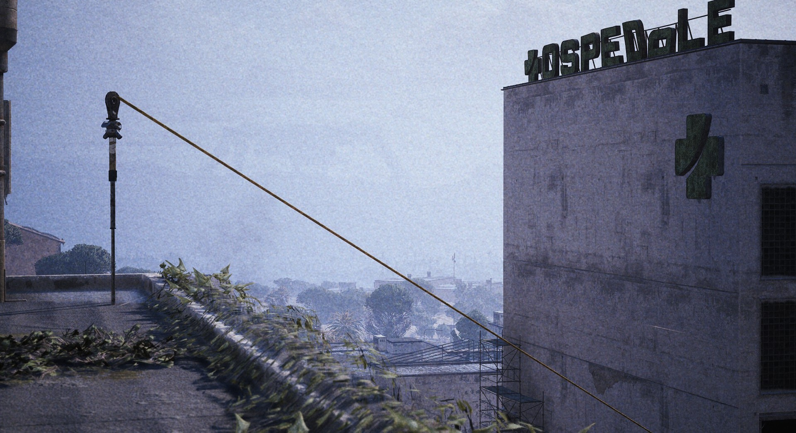

TRAGEDY AT THE ZIPLINE
Gravity remains undefeated: Raider attempts mid-air reload, discovers he only has two hands.
BURIED CITY The Speranza Safety Council has once again reiterated the importance of using both hands while using the ziplines scattered across The Rust Belt following a spectacular display of vertical incompetence by local Raider "Butterfingers" Bob.
The incident occurred during a raid in Buried City. While using the zipline from Buried City's Galleria to the local hospital, Bob reportedly realized his Kettle was sitting on a half-empty magazine. Fearing a potential encounter upon landing, Bob decided that waiting for solid ground was "inefficient" and attempted what he called the "Mid-Air Quick-Swap." Unfortunately for Bob, quickly reloading a kettle is a task that is considered "almost impossible" by veteran Raiders, even when using both hands.
The last thing Bob's dignity held onto.
The report states that once Bob was downed, he started crawling towards the local hospital, but since he did not equip a Looting Mk3 augment with the Survivor perk, he was unable to crawl far enough to reach the hospital before succumbing to his injuries, leaving him just shy of the front door to the hospital.
Bob's body was later found by a group of Raiders, who, after looting his body, reported the incident to the Speranza Safety Council. "We found him in a bush near the riverbed," reported the lead Raider of the group. "Surprisingly, the magazine was successfully seated in the rifle... I'm not too sure how that happened..."
The Speranza Safety Council will be handing out information pamphlets to all Raiders to prevent such tragedies from happening in the future, and reminds everyone that gravity is still the leading NON-ARC cause of death nowadays.